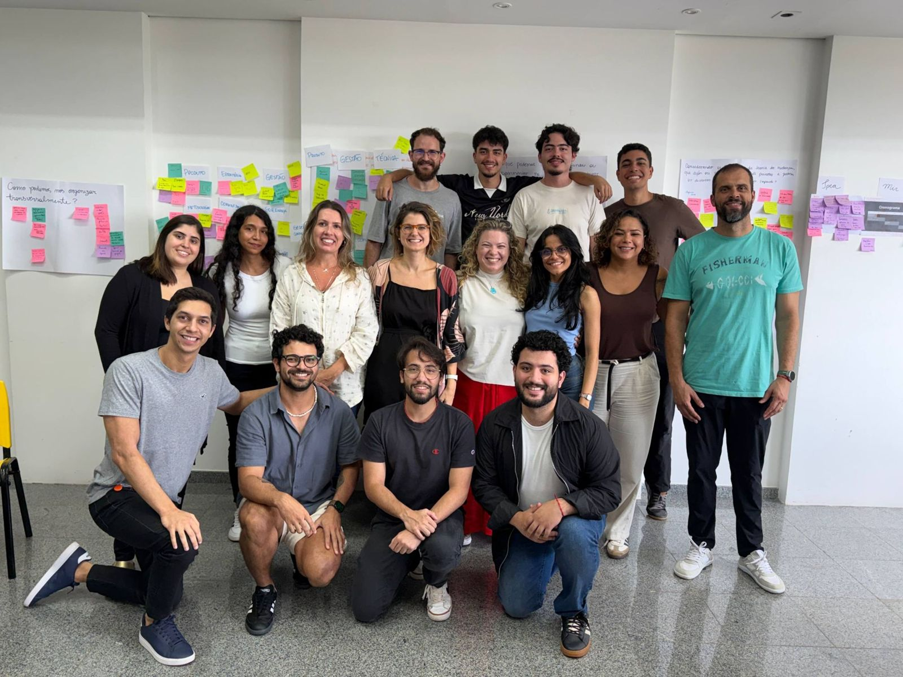
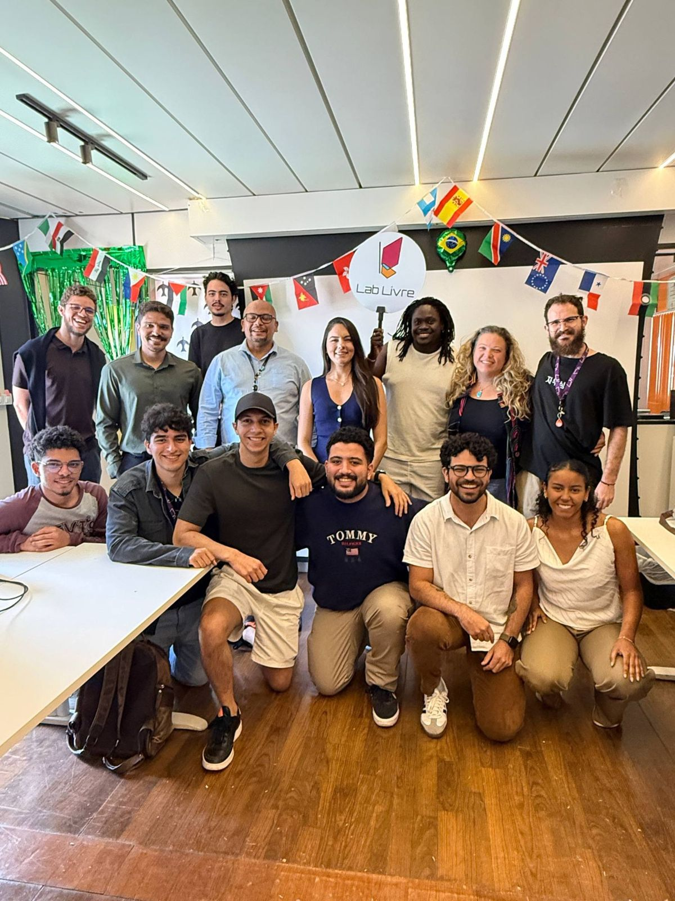
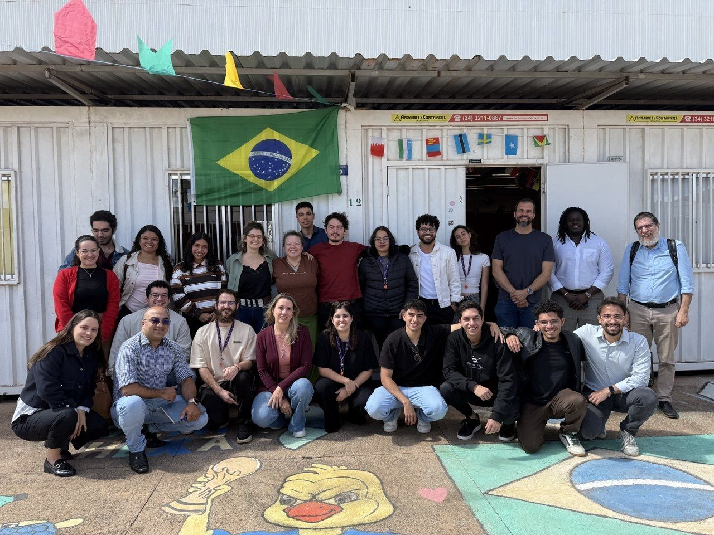
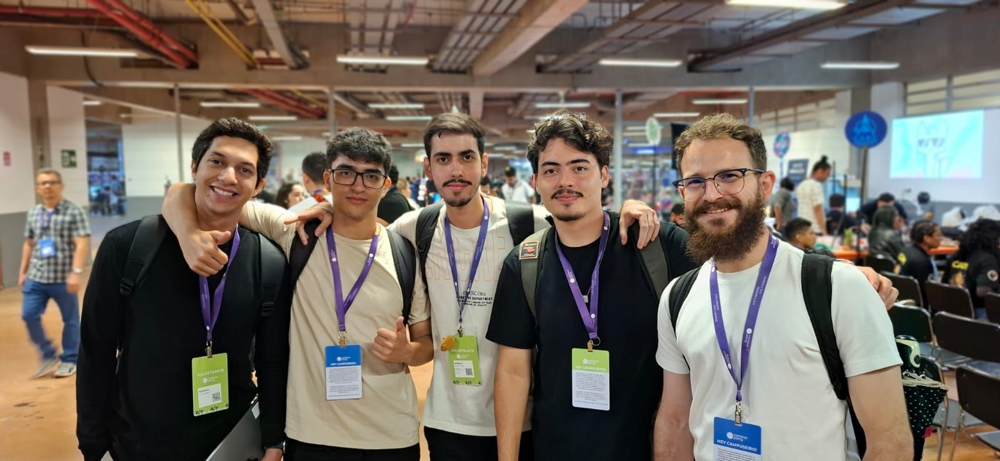

Sua trilha
Oito etapas, no seu ritmo
A ordem sugerida começa pelos acessos e segue para o contexto e o dia a dia da equipe. Você pode abrir qualquer etapa a qualquer momento e voltar quando precisar.
Quem faz o Gov Hub
A gente, em ação




Checklist completo
Tudo o que falta, num lugar só
As mesmas tarefas das etapas, reunidas para você marcar daqui mesmo.
Onboarding concluído. Seja muito bem-vinda, seja muito bem-vindo: a gente está junto.
Sobre esta trilha
Esta trilha é o seu ponto de partida no Gov Hub. O objetivo é que você tenha as ferramentas do dia a dia em mãos, entenda o que é o Lab Livre e o Gov Hub, conheça os projetos e as pessoas e saiba como a gente trabalha.
Como funciona
- São oito etapas, com tarefas curtas. A ordem sugerida começa pelos acessos e segue para o contexto e o dia a dia da equipe, mas você pode abrir qualquer etapa quando quiser.
- Ao terminar uma tarefa, clique em Concluir e avançar. A página inicial da trilha mostra o quanto você já fez e o que falta.
- O seu progresso fica salvo neste navegador. Se fechar a página ou desligar o computador, é só voltar pelo mesmo computador e navegador para continuar de onde parou.
Seus dados
Estas respostas são enviadas para a equipe do Gov Hub, junto com a data e a hora do envio.